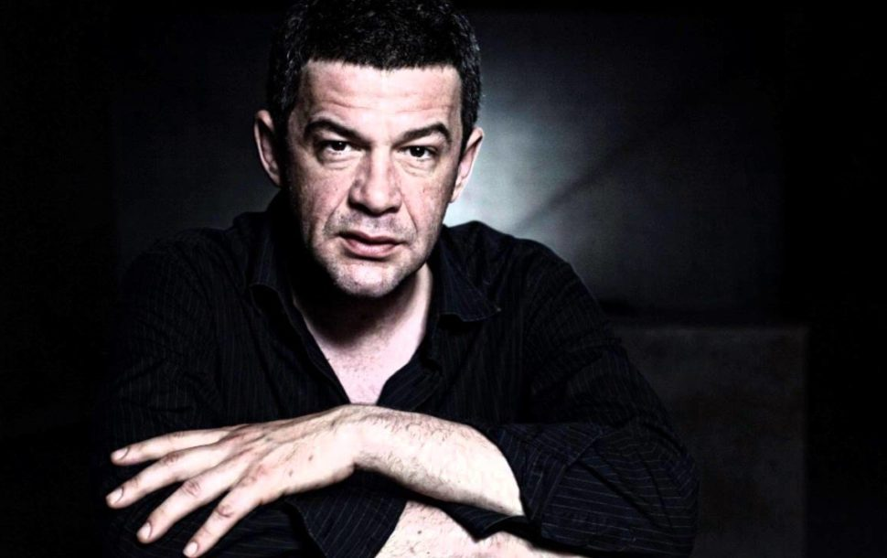
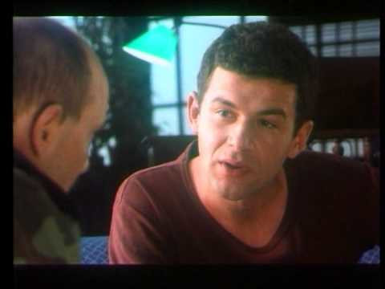

Небојша Глоговац (Требиње, 30. август 1969. — Београд, 9. фебруар 2018.) био је српски филмски, телевизијски и позоришни глумац.
 Током студирања добио је стипендију од Југословенског драмског позоришта, а своју глумачку каријеру започео је улогом у представи Велика пљачка, у режији Дејана Мијача. Прву ТВ улогу остварио је 1987. године, када се појавио у неколико епизода серије Бољи живот. Глоговац се на филму први пут појавио 1993. године у драми Рај Петра Зеца, где је био један од главних глумаца. Након што је скренуо пажњу на свој таленат, добио је улогу у филму редитеља Горчина Стојановића Убиство с предумишљајем (1995.).
Играо је главне улоге у остварењима Буре барута, Небеска удица, Муње!, Кад порастем бићу Кенгур, Клопка, Хадерсфилд, Бранио сам Младу Босну, Кругови, Равна гора и Устав Републике Хрватске. Вишеструко је награђиван за улоге у позоришту и на филму, а издвајају се Стеријина награда, Цар Константин у Нишу и Златна арена у Пули за најбољу мушку улогу.
Преминуо је после кратке и тешке болести, у Клиничком центру Србије у Београду, 9. фебруара 2018. године.
У каријери је играо у 43 филмске и телевизијске улоге, 19 телевизијских серија и у 5 кратких филмова. Појавио се у документарном филму Казна 1999. године, а остварио је допринос и у документарном филму Филм о филму 'Муње!', где је причао о својој улози полицајца и уопштено о филму 2001. године. Године 2009. позајмљивао је глас у филму Довиђења, како сте?, а 2011. године појавио се у хумористичко-сатиричној краткој серији Упркос свему. Био је наратор у документарном филму Јего благодарије барон Врангел 2013. године, а 2016. године позајмио је глас у документарном филму Једначина са једном непознатом. Године 2017. појавио се у реклами за Нектар пиво.
Више пута је одбијао улоге у страним филмовима, онима које је сматрао лошим по српски народ.
| 1980- | 1990- | 2000- | 2010- | Укупно | |
|---|---|---|---|---|---|
| Дугометражни филм | 0 | 6 | 12 | 20 | 38 |
| ТВ филм | 0 | 3 | 2 | 0 | 5 |
| ТВ серија | 2 | 1 | 6 | 10 | 19 |
| ТВ мини серија | 0 | 0 | 0 | 1 | 1 |
| Кратки филм | 0 | 1 | 1 | 3 | 5 |
| Укупно остварења | 2 | 11 | 21 | 34 | 68 |